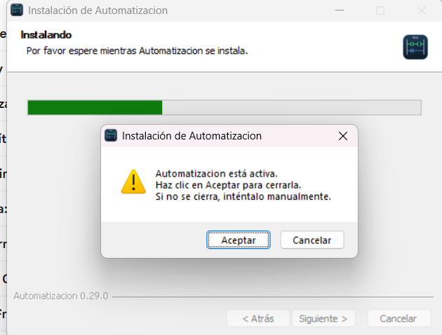

Instalación
Cómo instalar Automatizacion en Windows
Instalar el simulador en Windows 10 u 11 lleva un par de minutos. Esta guía te acompaña paso a paso, con capturas, desde la descarga hasta abrir la app por primera vez.
-
Paso 1: Descarga el instalador
Pulsa Instalador .exe en la zona de descargas. El navegador lo guarda en tu carpeta de Descargas. Cuando termine (en la lista de descargas pondrá «Hecho»), haz doble clic en
Automatizacion-Setup-….exepara empezar a instalar.
-
Paso 2: Windows muestra un aviso: es normal
Antes de abrir el instalador, Windows enseña la pantalla «Windows protegió su PC». Sale porque el instalador no lleva una firma digital de pago: es un certificado que se compra cada año y que este proyecto gratuito no tiene. Por eso Windows lo llama «aplicación desconocida» y «editor desconocido». No quiere decir que haya encontrado nada malo en él.

-
Paso 3: Pulsa «Más información» y «Ejecutar de todas formas»
Pulsa el enlace Más información que hay debajo del texto del aviso. Aparecen el nombre del fichero (
Automatizacion-Setup-….exe) y el botón Ejecutar de todas formas: púlsalo para abrir el instalador.
-
Paso 4: Sigue el instalador
Acepta las opciones que vienen marcadas: Solo para mí (no pide permisos de administrador), Siguiente, la carpeta de instalación que propone e Instalar. Si ya tenías una versión instalada, lo dice abajo y la actualiza: tus proyectos se conservan.

-
Paso 5: Si dice que Automatizacion está activa
Este mensaje solo sale si la app estaba abierta, por ejemplo al actualizar desde una versión anterior. Pulsa Aceptar: el instalador la cierra y sigue. Si no se cierra sola, ciérrala tú y vuelve a pulsar Aceptar.

-
Paso 6: Termina y abre la app
Al acabar, deja marcada la casilla Ejecutar Automatizacion y pulsa Terminar. La app se abre en el simulador libre, lista para escribir tu primer programa. A partir de ahora la tienes en el menú Inicio y con un acceso directo en el escritorio.

Otras formas y ayuda
- Sin permisos para instalar programas (un ordenador del centro, por ejemplo): descarga el Portable .zip, descomprímelo y abre
Automatizacion.exe. No se instala; si Windows muestra el mismo aviso, se pasa igual, con «Más información» y «Ejecutar de todas formas». - Para actualizar, descarga el instalador nuevo y repite los pasos: se instala encima de la versión anterior y conserva tus proyectos. Desde la app, el menú Ayuda ▸ Buscar actualizaciones… te dice si hay una nueva.
- ¿Tienes un Mac o usas Linux? Las instrucciones están en las preguntas frecuentes. Si algo no funciona, cuéntalo en GitHub.